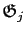

Next: Optional programs Up: Installation Previous: Installation on your OS Contents Index
Compilation of the C code is not essential for running relax, however certain features of the program will be disabled. Currently only the exponential curve-fitting for determining the

and
 relaxation rates requires compilation. To run relax without compilation install the dependencies detailed above, download the source distribution which should be named relax-x.x.x.src.tar.bz2, extract the files, and then run the file called relax in the base directory.
relaxation rates requires compilation. To run relax without compilation install the dependencies detailed above, download the source distribution which should be named relax-x.x.x.src.tar.bz2, extract the files, and then run the file called relax in the base directory.